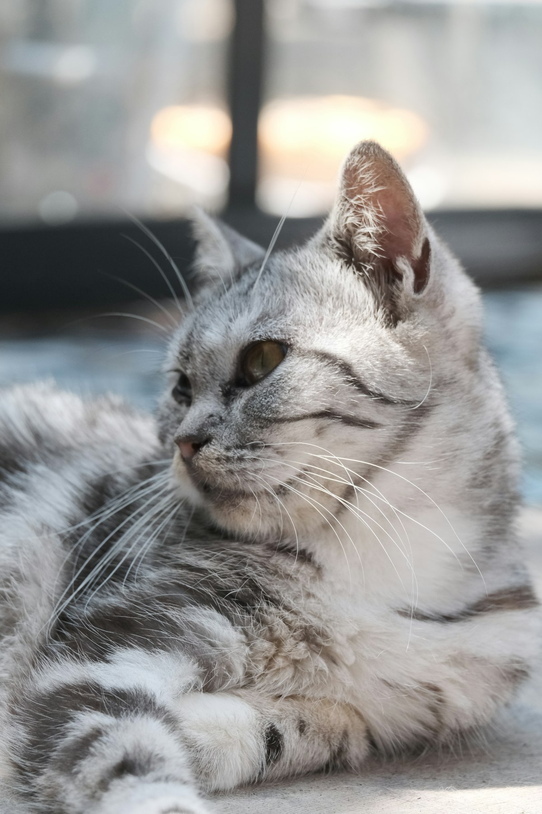

아메리칸 숏헤어 키우기 완벽 가이드 — 성격·수명·심장병·비만 관리

다부진 체격에 클래식 태비 무늬가 매력인 아메리칸 숏헤어(아메숏)는 "튼튼하고 원만한 만능형" 고양이입니다. 사람도 잘 따르고 적응력도 좋아 첫 고양이로 손색없지만, 먹성 하나는 각오해야 해요.
한눈에 보는 아메숏
| 크기 | 중형묘 (체중 약 3.5~6.5kg, 다부진 체격) |
|---|---|
| 수명 | 약 13~17년 |
| 털빠짐 | 중간 (단모, 주 1~2회 빗질) |
| 활동량 | 중상 (사냥 놀이 좋아함) |
| 성격 | 원만·활발, 독립심과 애교의 균형 |
| 초보자 적합도 | 매우 높음 |
성격과 기질
아메숏은 본래 배와 농장에서 쥐를 잡던 일 잘하는 사냥꾼 출신입니다. 그래서 지금도 움직이는 장난감에 진심이고, 몸놀림이 좋습니다. 성격은 원만해서 아이·다른 반려동물과도 잘 지내고, 과하게 붙어 있지 않으면서도 사람 곁을 좋아하는 독립심과 애교의 균형형이에요.
적응력이 좋아 환경 변화에 비교적 의연한 편이라, 첫 고양이로도 무난합니다.
입양 전 현실 체크 (비용·공간·시간)
고양이가 개보다 손이 덜 간다는 말은 대체로 맞지만, 아메숏에는 단서가 붙습니다. 체격이 다부지고 먹성이 좋아 사료와 모래 소비가 소형 품종보다 큽니다. 체중 5kg 성묘를 기준으로 한 달 지출을 잡아보면 대략 이 정도입니다.
| 항목 | 월 대략 | 비고 |
|---|---|---|
| 사료 | 3~5만 원 | 건사료 하루 55~75g(사료 열량에 따라 차이), 습식을 섞으면 더 올라갑니다 |
| 모래 | 2~3만 원 | 몸집이 큰 만큼 배변량도 많은 편 |
| 예방·검진 | 1.5~2.5만 원 | 연 1회 접종과 건강검진을 12개월로 나눈 값 |
| 장난감·스크래처 | 1만 원 안팎 | 잘 노는 품종이라 소모품에 가깝습니다 |
| 합계 | 8~12만 원 | 중성화(수컷·암컷에 따라 대략 10~40만 원)와 첫해 기초 접종은 별도 |
공간은 넓이보다 높이
원룸에서도 충분히 키울 수 있습니다. 다만 아메숏은 잘 뛰고 잘 오르는 편이라 바닥 면적보다 세로 동선이 중요합니다. 캣타워 하나, 혹은 벽 선반 두세 개만 있어도 활동량이 확 달라져요. 화장실은 마릿수보다 하나 더 두는 것이 기본이고, 몸집이 크니 몸길이의 1.5배 정도 되는 넉넉한 크기를 고르는 편이 좋습니다. 좁은 화장실은 참는 습관으로 이어질 수 있습니다.
하루에 들어가는 돌봄 시간
화장실 치우기 아침저녁 각 2~3분, 사냥 놀이 2~3회 합쳐 20~30분, 물그릇·밥그릇 정리 5분, 빗질은 주 1~2회 5분. 다 합쳐도 하루 40분 안팎으로 개보다 확실히 적습니다. 산책 의무가 없다는 점이 직장인에게는 큰 차이예요.
혼자 두는 시간에 대한 내성
독립적인 성향이라 낮 8~10시간 부재는 무리가 없습니다. 하루 정도 집을 비우는 1박도 자동 급식기와 물, 화장실 두 개를 준비하면 대체로 괜찮습니다. 다만 2박부터는 화장실이 빠르게 더러워지고 물 상태도 나빠지므로 방문 돌봄을 부탁하는 편이 안전해요. 대신 활동성이 있는 품종이라 심심함은 잘 탑니다. 창밖이 보이는 자리와 퍼즐 피더 하나가 있으면 낮 시간이 훨씬 덜 지루해집니다.
주의해야 할 질병
- 비대성 심근증(HCM) — 고양이에서 가장 흔한 심장병으로, 아메숏도 소인이 알려져 있습니다. 겉으론 멀쩡해 보여도 진행될 수 있어 정기 검진(필요 시 심장 초음파)이 조기 발견의 열쇠입니다. 호흡이 빨라지거나 쉽게 지치면 병원에 가세요.
- 비만 — 먹성이 좋아 중성화 후 살이 찌기 쉽습니다. 비만은 당뇨·관절염·지방간 위험을 키우므로 이 품종 관리의 핵심입니다. (비만도 자가진단)
- 치주 질환 — 고양이 공통. 양치 습관과 정기 스케일링 상담이 좋습니다.
- 하부요로계 질환 — 물을 적게 마시면 위험이 커집니다. 음수량을 늘려주세요. (방광염·요로결석 가이드)
나이대별 관리 포인트
자묘기 (1세까지)
성장 속도가 빨라 자묘용 사료를 넉넉히 주어도 되는 거의 유일한 시기입니다. 문제는 이 습관을 그대로 성묘까지 끌고 가는 것인데, 그 얘기는 아래에서 다시 하겠습니다. 고양이의 사회화 창은 생후 2~7주 무렵으로, 3~14주인 강아지보다 이르게 닫힙니다. 이 시기에 발톱깎이, 빗, 이동장, 낯선 사람의 손길을 좋은 경험으로 붙여두면 평생이 편해져요. 반대로 이때 사람 손을 사냥감으로 배우면 성묘가 된 뒤 힘 조절 없이 뭅니다. 중성화 시기는 보통 생후 5~7개월 사이에 상담합니다. (고양이 중성화)
성묘기 (1~7세)
아메숏에게 가장 중요한 구간입니다. 중성화 이후 3~6개월은 활동량이 줄고 식욕은 그대로여서 체중이 가장 빨리 붙는 시기예요. 이때 급여량을 10~20%가량 조정하지 않으면 1년 안에 1kg가 늘어 있는 경우가 흔합니다. 5kg짜리 고양이의 1kg은 체중의 20%라 결코 작은 변화가 아닙니다. 한 달에 한 번 재고, 갈비뼈가 살짝 만져지는지 손으로 확인하세요. 심장(HCM)은 겉으로 조용히 진행되는 편이라, 정기 검진 때 청진을 받고 심잡음이나 부정맥이 잡히면 초음파 검사를 상의하는 흐름이 일반적입니다.
노령기 (8세 이후)
노령묘의 이상 신호는 대개 물그릇과 화장실에서 먼저 보입니다. 물을 부쩍 많이 마시고 모래 덩어리가 커졌다면 신장·당뇨·갑상선 쪽을 확인해 볼 시점이에요. 잘 먹는데 살이 빠지는 변화도 그냥 넘기지 마세요. (고양이 만성 신장병) 관절 문제는 고양이에서 절뚝임보다 "높은 곳에 안 올라감, 뛰기 전에 망설임"으로 나타납니다. 체중이 실리는 아메숏에서는 특히 눈여겨볼 신호입니다. 8세부터는 1년에 두 번, 혈액·소변검사를 포함한 검진을 권합니다.
털 관리와 털빠짐 대응
"단모라 빗질할 게 없다"는 말은 아메숏에는 잘 맞지 않습니다. 털 길이가 짧을 뿐 속털까지 촘촘하게 들어찬 두꺼운 털이라, 계절이 바뀌면 검은 옷과 소파에 남는 양이 만만치 않아요.
도구와 주기
고무 재질의 러버 브러시나 그루밍 글러브가 이 털에 가장 잘 맞습니다. 평소 주 1~2회, 환모기에는 하루 3~5분이면 충분해요. 슬리커 브러시를 쓸 때는 힘을 빼고 짧게 지나가야 피부가 긁히지 않습니다. 빗질을 하면 스스로 핥아 삼키는 털이 줄어 헤어볼도 함께 줄어듭니다.
환모기
봄과 가을에 각각 3~4주 정도 털이 크게 빠집니다. 이 기간에는 빗질을 매일로 올리고, 카펫이나 패브릭 소파가 있다면 청소 주기도 함께 당겨야 합니다. 젖은 손으로 몸을 한 번 쓸어주는 것만으로도 뜬 털이 상당히 걷힙니다.
목욕·발톱·양치
목욕은 기본적으로 필요하지 않습니다. 스스로 하는 그루밍으로 충분하고, 오염이 심할 때만 고양이 전용 샴푸를 쓰면 됩니다. 발톱은 2~3주에 한 번, 특히 앞발 위주로 끝의 투명한 부분만 잘라주세요. 스크래처는 세로형과 가로형을 하나씩 두고 어느 쪽을 쓰는지 지켜보세요. 털 관리에 손이 덜 가는 품종이니, 아낀 시간은 양치에 쓰는 것이 남습니다. 주 3회 이상이 목표예요.
일상 관리 (놀이·식이)
사냥 놀이
사냥 본능이 강한 품종이라 낚싯대 장난감으로 하루 2~3회, 5~10분씩 놀아주면 비만 예방과 스트레스 해소를 한 번에 잡을 수 있습니다.
식이 관리
"그릇 비면 채워주기"는 아메숏에겐 금물입니다. 급여량을 재서 주고, 사료 선택은 사료 고르는 기준을 참고하세요. 물그릇·정수기를 여러 곳에 두어 음수량을 늘려주면 비뇨기 건강에도 좋습니다.
초보 집사가 자주 하는 실수
- 자율 급식을 성묘까지 그대로 유지하기 — 자묘기에는 맞는 방식이지만, 중성화 이후에도 그릇을 채워두면 아메숏에서는 거의 예외 없이 체중이 붙습니다. 하루 총량을 저울로 재서 2~3회로 나누고, 일부는 퍼즐 피더에 담으면 먹는 속도까지 늦출 수 있습니다.
- 손이나 발로 놀아주기 — 사냥 본능이 강한 품종이라 대상이 사람 몸으로 각인되면 성묘가 됐을 때 힘 조절 없이 뭅니다. 처음부터 낚싯대나 인형을 사이에 두세요. 이미 버릇이 들었다면 물릴 때 소리를 지르기보다 그 자리에서 놀이를 멈추는 편이 낫습니다.
- 레이저 포인터만으로 놀아주기 — 아무리 쫓아도 잡히지 않아 사냥이 완결되지 않습니다. 끝날 때는 실물 장난감을 잡게 하거나 간식으로 마무리해 주세요.
- 구토를 전부 헤어볼로 넘기기 — 단모라 헤어볼이 적을 거라 생각하기 쉽지만 속털이 촘촘해 삼키는 털이 적지 않습니다. 다만 구토가 주 1회 이상 반복되거나, 먹은 직후에 토하거나, 토한 뒤 기운이 없다면 헤어볼이 아닐 수 있으니 진료를 받아보세요. (고양이 구토, 넘겨도 되는 경우와 아닌 경우)
사회화와 생활 훈련
고양이는 훈련이 안 된다는 말은 사실이 아닙니다. 특히 아메숏은 좋은 먹성이 그대로 훈련 동기가 됩니다. 간식 한 알로 유도할 수 있는 행동이 많아 "이리 와", "손 터치", "이동장 들어가기" 정도는 며칠이면 붙어요. 반대로 혼내기는 효과가 없습니다. 행동이 줄어드는 게 아니라 보호자를 피하는 쪽으로만 학습됩니다.
이동장 훈련이 1순위
평소에는 넣어뒀다가 병원 갈 때만 꺼내면, 이동장 자체가 나쁜 일의 신호가 됩니다. 문을 떼거나 열어둔 채 거실 한쪽에 두고 담요와 간식을 넣어 잠자리 중 하나로 만들어 두세요. 병원 가는 길의 스트레스가 줄면 정기 검진 자체가 수월해지고, 조용히 진행되는 심장 질환처럼 조기 발견이 중요한 문제에서 특히 도움이 됩니다.
발톱깎기와 신체 접촉 둔감화
한 번에 다 깎으려 하지 말고 하루에 한두 개씩 자르고 바로 간식을 주는 식으로 나누세요. 발을 만지는 것, 입술을 들어 이를 보는 것, 귀를 젖히는 것도 같은 방식으로 짧게 반복하면 나중에 양치와 진료가 훨씬 편해집니다.
다른 반려동물과 합사
적응력이 좋은 편이라 합사 성공률이 낮지 않지만, 순서를 건너뛰면 틀어집니다. 처음 며칠은 공간을 분리해 냄새만 교환하고, 다음에는 문틈이나 안전문 너머로 서로를 보게 한 뒤, 마지막에 짧은 대면을 반복하는 순서로 보통 2~4주를 잡습니다. 밥그릇과 화장실은 처음부터 따로 두어야 다툼이 줄어듭니다.
이런 분께 잘 맞아요
- 손이 덜 가는 튼튼한 첫 고양이를 원하는 분
- 매일 짧은 놀이 시간을 내줄 수 있는 집사
- 아이·다른 반려동물이 있는 가정
자주 묻는 질문 (FAQ)
Q. 아메숏은 안기는 걸 좋아하나요?
개체차가 있지만, 무릎 위보다 "옆에 같이 있기"를 선호하는 경향이 있습니다. 억지로 안기보다 곁을 내주는 방식이 잘 맞아요.
Q. 혼자 두고 출근해도 괜찮을까요?
독립심이 있는 편이라 비교적 잘 지내지만, 퇴근 후 놀이 시간으로 에너지를 풀어줘야 합니다. 장기 부재 시엔 돌봄을 부탁하세요.
Q. 무늬가 다양하다던데요?
실버 클래식 태비(소용돌이 줄무늬)가 대표지만 색·무늬가 매우 다양합니다. 무늬와 성격은 무관하니 건강 이력을 더 중요하게 보세요.